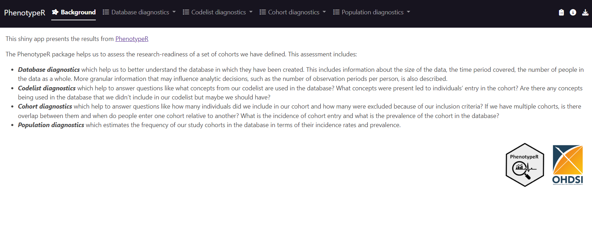
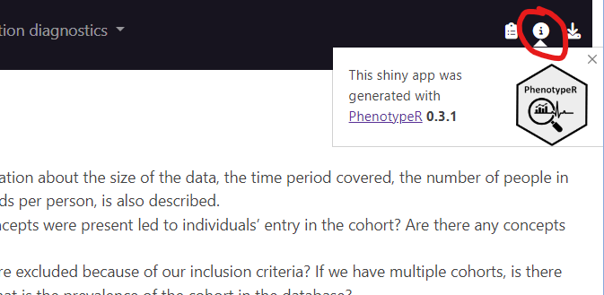
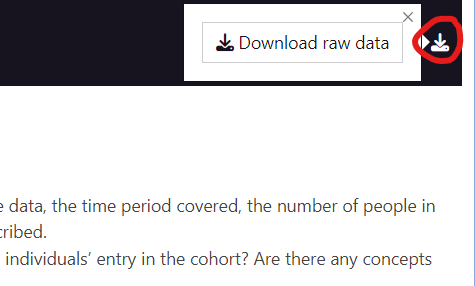
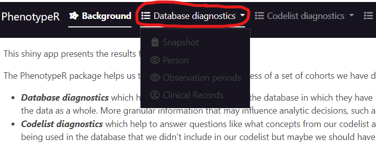
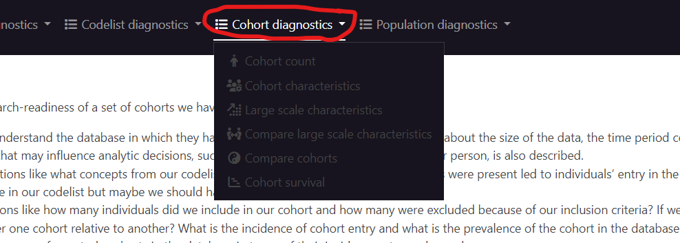
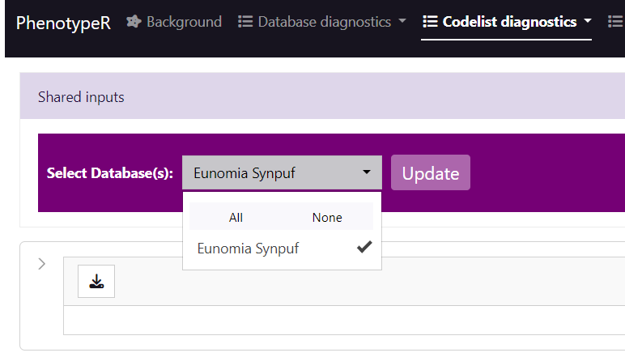
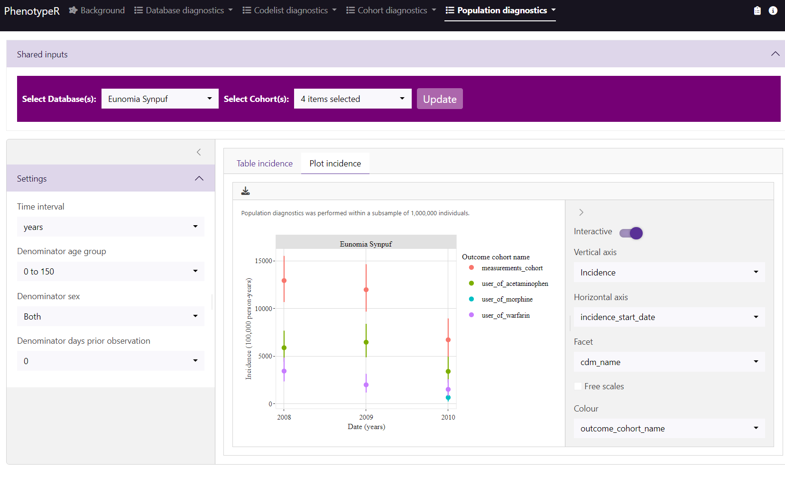

Introduction: Run ShinyDiagnostics
In the previous vignettes we have seen how to run a phenotype diagnostics and it’s expectations. ShinyDiagnostics can help us to visualise all the results in an interactive shiny app. See an example of how to run it below:
library(CohortConstructor)
library(PhenotypeR)
library(dplyr)
con <- DBI::dbConnect(duckdb::duckdb(),
CDMConnector::eunomiaDir("synpuf-1k", "5.3"))
cdm <- CDMConnector::cdmFromCon(con = con,
cdmName = "Eunomia Synpuf",
cdmSchema = "main",
writeSchema = "main",
achillesSchema = "main")
# Create a code lists
codes <- list("user_of_warfarin" = c(1310149L, 40163554L),
"user_of_acetaminophen" = c(1125315L, 1127078L, 1127433L, 40229134L,
40231925L, 40162522L, 19133768L),
"user_of_morphine" = c(1110410L, 35605858L, 40169988L),
"measurements_cohort" = c(40660437L, 2617206L, 4034850L, 2617239L,
4098179L))
# Instantiate cohorts with CohortConstructor
cdm$my_cohort <- conceptCohort(cdm = cdm,
conceptSet = codes,
exit = "event_end_date",
overlap = "merge",
name = "my_cohort")
# Run PhenotypeDiagnostics including all diagnostics
result <- phenotypeDiagnostics(cdm$my_cohort, survival = TRUE)
# Generate expectations
chat <- chat("google_gemini")
expectations <- getCohortExpectations(chat = chat,
phenotypes = result)
# Create the shiny app based on PhenotypeDiagnostics results, suppressing all
# cell counts smaller than 2, saved in a temporary directory, and with the
# expectations created using "gemini".
shinyDiagnostics(result = result, minCellCount = 2, directory = tempdir(), expectations = expectations)Shiny App Overview
Let’s now explore the Shiny App created together! Once you’ve run the code above, you should obtain a shiny app similar to this one: here.
The first thing we will find when creating the PhenotypeR Shiny Diagnostics is a Background tab with a small summary of all the diagnostics: 
You can see which PhenotypeR version was used to generate the Shiny App by clicking the i tab at the top.

Or download the summarised result by clicking the download tab:

Notice that we have a tab for each one of the diagnostics, and those contain the specific analyses performed. Results are visualised in the form of interactive tables and plots.
Database Diagnostics:
Codelist Diagnostics:

Cohort Diagnostics:

Population Diagnostics:

Let’s now explore additional functionalities that the ShinyDiagnostics offers. If we click to Codelist diagnostics / Achilles code use or Codelist diagnostics / Orphan code use tab, we will first find a horizontal purple bar that will show us all the databases we included:

Once we have selected the ones of interest, we will need to click the UPDATE button to generate the table with the results.
For Codelist diagnostics / cohort code use, Codelist diagnostics / measurement diagnostics, Cohort diagnostics and Population diagnostics, we will also have the option to select the cohorts of interest:

We will always find (in all the tabs) a download icon on the left which will download the table, gt table, or plot that is being shown:

In some tabs, we will also find a left tab that will show additional filtering or formatting options (remember to click UPDATE every time you change a parameter!):

When we have two (or more) subtabs with different formatting formats (which is the case for Population diagnostics / Incidence, where we have a table and a plot), the formatting tab will be on the right:

Now it’s your turn to explore the Shiny App!
Special cases
As mentioned, ShinyDiagnostics() can be run with
specific diagnostic results. This includes
DatabaseDiagnostics(), CodelistDiagnostics(),
CohortDiagnostics(), and
PopulationDiagnostics(). Alternatively, you can disable
diagnostics within PhenotypeDiagnostics(). If a diagnostic
is not performed, its corresponding tab will not appear in the Shiny
App. Similarly, if survival analysis is skipped in
CohortDiagnostics(), its tab will be removed. The same
applies if your CDM lacks ACHILLES tables, which means “achilles code
use” and “orphan code use” cannot be performed. In such cases, their
tabs will also be automatically removed from the Shiny App.